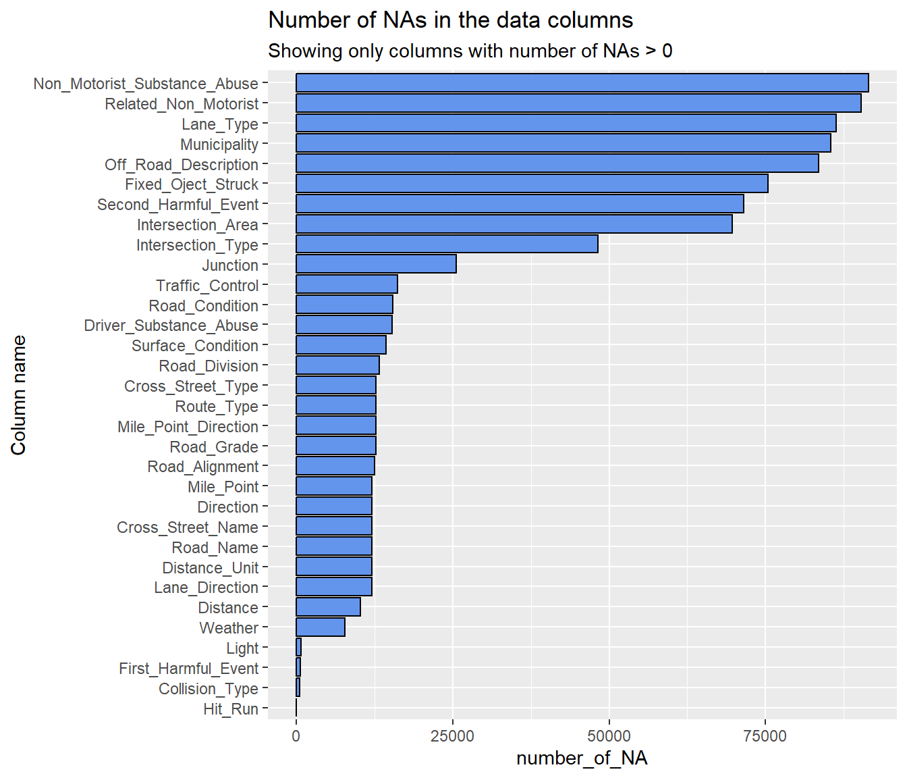
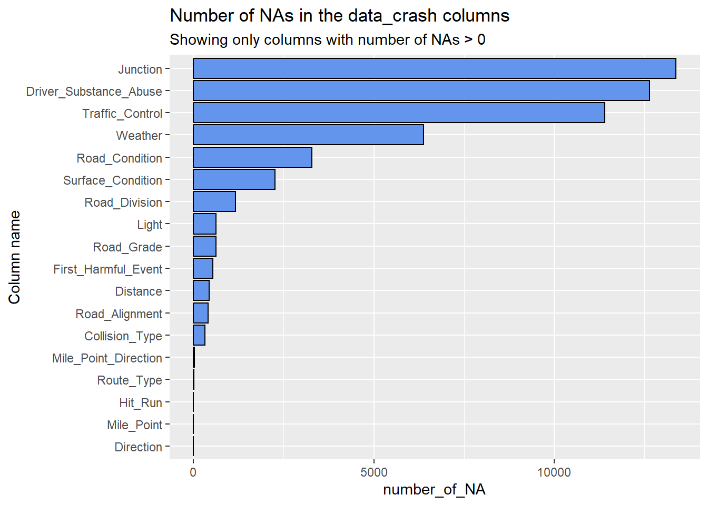
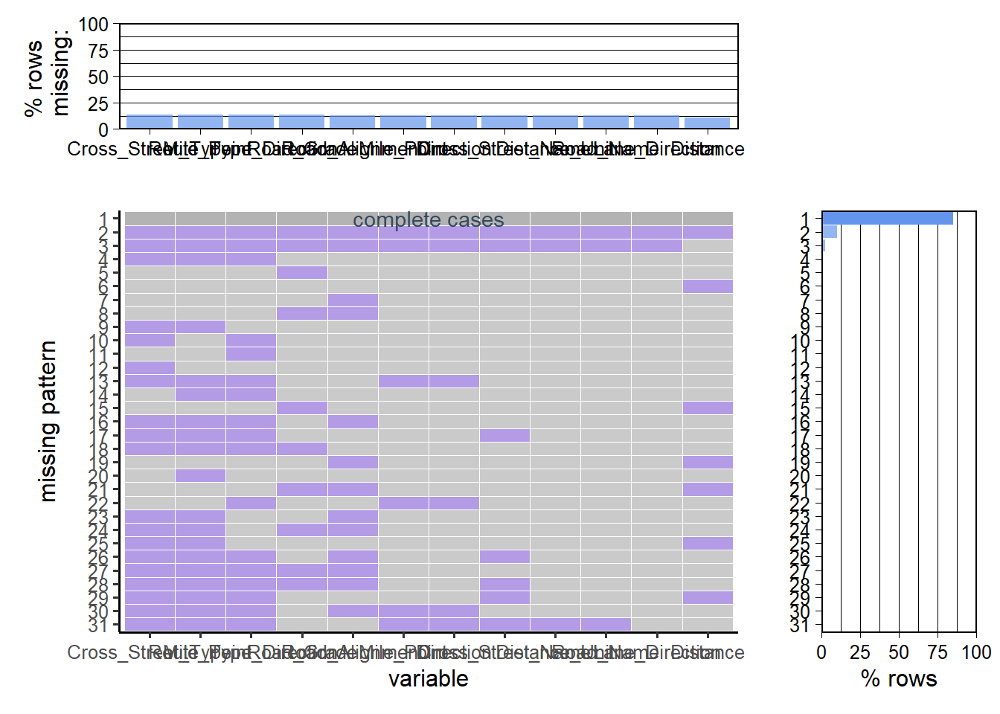
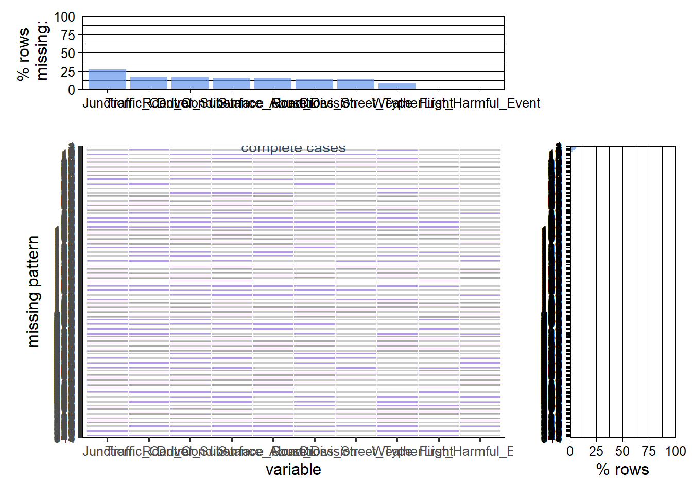

The data we are analyzing in this project is provided by the Public-Safety website of the Montgomery County, MD (link = https://data.montgomerycountymd.gov/Public-Safety/Crash-Reporting-Incidents-Data/bhju-22kfLinks to an external site).
The data is supplied by all the police departments of this county. Moreover, the description of the data set mentions that : “Please note that these collision reports are based on preliminary information supplied to the Police Department by the reporting parties. Therefore, the collision data available on this web page may reflect:
-Information not yet verified by further investigation -Information that may include verified and unverified collision data -Preliminary collision classifications may be changed at a later date based upon further investigation -Information may include mechanical or human error”
According to the dataset description, the data is updated weekly. The source data comprises 95.6k rows and 44 columns, with each row representing a car collision that happened.The dataset, downloaded on November 22, 2023, is available as a .csv file in the repository under the ‘data’ file. We will stick to this version of the dataset fo the entire project. The data has position features as well as a time feature and combinations of categorical and numerical data describing the accident.
2.1 Description
In class, we were introduced to multiple plots and we are going to utilize them to drive insightful factors associating to higher number of collisions. Some of the interesting columns we wish to explore are “Crash Date/Time” to see if we can spot some trend or seasonality in the collision data based on the days of the week, hours in the day, etc. Similarly we want to use the geographical data to spot specific trends. Moreover, we will also study the quality of the roads or the configuration of the roads (whether it is curved or not, whether it is a two-way road or a single). Further the weather conditions will reveal some important trend. Some other paths to explore might be the “At Fault” column that describe whether the driver is at fault in the accident or a non-motorist. And the type of accidents thanks to “First Harmful Event”. Hence, our data offers various paths to explore, each potentially yielding distinct insights into car accidents.
Overall, our goal is to identify combinations of features that could elevate the risk of collisions. This information can then provide policymakers with valuable insights to implement meaningful changes or restrictions on the roads.
2.2 Missing value analysis
Code
data_crash <-read_csv("data/Crash_Reporting_-_Incidents_Data.csv", col_types =cols('Local Case Number'=col_character())) # the 2nd column contains string and not number that's why we specify it.data_crash <-rename(data_crash, "Hit_Run"=`Hit/Run`) data_crash <-rename(data_crash,"Crash_Date_Time"=`Crash Date/Time`)#rename("Crash_Date_Time" = `Crash_Date/Time`)### Preprocess:new_col_names <-colnames(data_crash)# Replace spaces and dashes with underscoresnew_col_names <-gsub(" ", "_", new_col_names)new_col_names <-gsub("-", "_", new_col_names)colnames(data_crash) <- new_col_namesdata_crash |>head()
# Function to replace "N/A" with NA in a vectorreplace_na <-function(x) { x[x =="N/A"] <-NAreturn(x)}# Apply the function to each column of the data_crash framedata_crash <-as_tibble(lapply(data_crash, replace_na))
2.3 Analyzing NAs
Code
## PLot the number of NAs for each columnb <-apply(data_crash, 2, function(c) sum(is.na(c)))tibble_nas <-tibble(column_name =names(b), number_of_NA = b)tibble_nas
ggplot(tibble_nas |>filter(number_of_NA >0 ))+geom_col(mapping =aes(y=reorder(column_name,number_of_NA), x = number_of_NA)) +labs(title ="Number of Nas in the data columns",subtitle ="Showing only columns with number of NAs > 0",y ='Column name')

Code
paste0("Number of columns with at least 1 NA = ", tibble_nas |>filter(number_of_NA >0) |>nrow())
[1] "Number of columns with at least 1 NA = 32"
Code
paste0("Number of columns without any NAs = ", tibble_nas |>filter(number_of_NA ==0) |>nrow())
[1] "Number of columns without any NAs = 12"
There are 9 columns with “too many” NAs (more than 45% of the rows)
Further, there are many columns with NA values that mostly overlap each other (if there is NA in one of those columns it appears also in the other ones), The following code reflect that fact –> if we filter the NAs from the column: Cross-Street Type –> and we can observe that the number of columns with NAs reduced significantly.
Code
filtered_data_crash <- data_crash[!is.na(data_crash$Cross_Street_Type),]b <-apply(filtered_data_crash, 2, function(c) sum(is.na(c)))tibble_nas <-tibble(column_name =names(b), number_of_NA = b)tibble_nas_filtered_data_crash <- tibble_nasggplot(tibble_nas |>filter(number_of_NA >0 ))+geom_col(mapping =aes(y=reorder(column_name,number_of_NA), x = number_of_NA)) +labs(title ="Number of Nas in the data_crash columns",subtitle ="Showing only columns with number of NAs > 0",y ='Column name')

For now we won’t deal with those NAs. Later in the project we would choose the specific columns to analyze together and then we will decide on the best method to deal with the NAs in those columns.
2.4 Repartition of the NAs in between columns
We want to get a list of columns that has the same “NA” pattern:
Code
b <-apply(data_crash, 2, function(c) sum(is.na(c)))tibble_nas_data_crash <-tibble(column_name =names(b), number_of_NA = b)#Compare the 2 lists, the one with all the column with less that 1000 NAs and the lists with the same conditions but after removing all the NAs row in the column "Cross-Street Type"a <- tibble_nas_data_crash |>filter(number_of_NA<1000)b <- tibble_nas_filtered_data_crash |>filter(number_of_NA<1000)# Get the name of the column which are not in common in the 2 previous listdifference_both_ways <-union(setdiff(a$column_name, b$column_name), setdiff(b$column_name, a$column_name))print(difference_both_ways)
Warning: Using an external vector in selections was deprecated in tidyselect 1.1.0.
ℹ Please use `all_of()` or `any_of()` instead.
# Was:
data %>% select(difference_both_ways)
# Now:
data %>% select(all_of(difference_both_ways))
See <https://tidyselect.r-lib.org/reference/faq-external-vector.html>.
Scale for y is already present.
Adding another scale for y, which will replace the existing scale.
Scale for y is already present.
Adding another scale for y, which will replace the existing scale.

Using the plot_missing function, we can clearly see that those columns indeed has NAs in the same rows. We can conclude that their NAs are correlated.
Further, we will take one of those columns: Cross_Street_Type and use it as a representative of the 12 columns group and then see if there is any pattern between the NAs of the other columns:
Warning: Using an external vector in selections was deprecated in tidyselect 1.1.0.
ℹ Please use `all_of()` or `any_of()` instead.
# Was:
data %>% select(differences)
# Now:
data %>% select(all_of(differences))
See <https://tidyselect.r-lib.org/reference/faq-external-vector.html>.
Scale for y is already present.
Adding another scale for y, which will replace the existing scale.
Scale for y is already present.
Adding another scale for y, which will replace the existing scale.

One can see that there is no common pattern between all the NAs for these 10 columns.
In conclusion, for all the columns in the array ‘difference_both_ways’ we can deal with the NAs in the same way in the future. However, for the other columns which still has a lot of NAs like Weather or Traffic Control, we need to be more careful when removing the NAs because we could end up with very few rows in the data set. We will take care of them on a case-by-case basis.
Code
holiday_data <-read_csv("data/holidays.csv")
Rows: 198 Columns: 2
── Column specification ────────────────────────────────────────────────────────
Delimiter: ","
chr (1): holiday
date (1): date
ℹ Use `spec()` to retrieve the full column specification for this data.
ℹ Specify the column types or set `show_col_types = FALSE` to quiet this message.